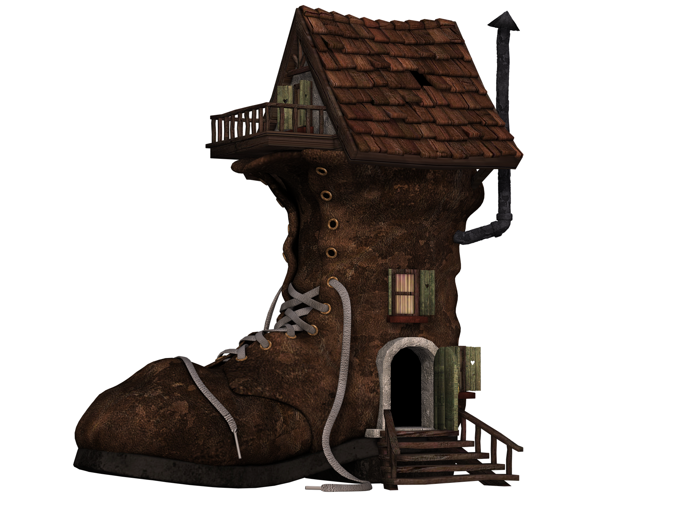

Hier erwartet Sie und Ihre Familie ein 3-stöckiges Haus mit Charakter. Wenn Ihnen ein gewisser Altbaucharm gefällt und Sie morgens am liebsten mit dem Geruch von getragenem Stiefel geweckt werden wollen, werden Sie dieses Haus lieben. Es bietet in erster Linie viel Platz. Auf den 170qm befinden sich 5 Zimmer: 4 Schlafzimmer
und ein Wohnzimmer. Das Dachgeschoss ist ausgebaut und stellt das größte der 4 Schlafzimmer da. Außerdem gibt es hier einen Balkon. Eine weitere Besonderheit befindet sich im Wohnzimmer. Dort ist ein gemütlicher, großer Ofen installiert, der am Abend und besonders an kalten Tagen zum gemütlichen Beisammensein einlädt.